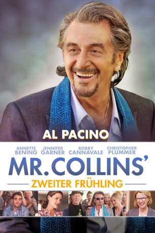
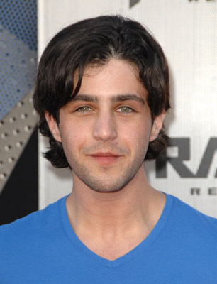
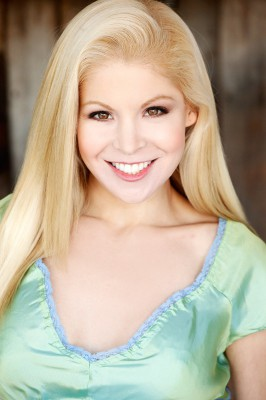

#4240 Mr. Collins' zweiter Frühling
Alternativ: Danny Collins
 
 IMDB-Wertung: 7.0 / 10
IMDB-Wertung: 7.0 / 10  Metascore: 0
Metascore: 0 
Der alteingesessene Rocker Danny Collin führt seit Jahren ein ausschweifendes, rücksichtsloses Leben. Doch das ändert sich mit seinem 64. Geburtstag von Grund auf. An diesem Tag entdeckt Dannys Manager Frank Grubman einen 40 Jahre alten Brief, den John Lennon einst an Danny geschrieben und den der Rocker bisher nicht gelesen hat. Danny holt sein Versäumnis nach und möchte sein Leben daraufhin völlig umkrempeln. Er will endlich seinen leiblichen Sohn Tom treffen, was er jahrelang versäumt hat – und er will eine gute Beziehung zu ihm und seiner Frau Samantha aufbauen. Dafür reist er nach New Jersey, wo er auch die charmante Mary die Besitzerin eines kleinen Hotels, kennenlernt. Ob sich John Lennons Botschaft, der zufolge es letztlich nur auf die Liebe ankommt, am Ende tatsächlich als wahr herausstellen wird?
Jahr: 2015
Dauer: 106 Minuten
FSK: 12
Land: USA Studio: Bleecker Street MediaTonspuren: DTS - ,
Untertitel: Deutsch,
Auflösung: 1080p (1920x800) Größe: 6850 MB
Genre: Komödie, Drama, Musik
Regisseur: Dan Fogelman
Drehbuch: Jason Keller
Soundtrack:
Darsteller:
 Al Pacino als Danny Collins
Al Pacino als Danny Collins Annette Bening als Mary Sinclair
Annette Bening als Mary Sinclair Jennifer Garner als Samantha Leigh Donnelly
Jennifer Garner als Samantha Leigh Donnelly Bobby Cannavale als Tom Donnelly
Bobby Cannavale als Tom Donnelly Christopher Plummer als Frank Grubman
Christopher Plummer als Frank Grubman- Katarina Cas als Sophie
- Giselle Eisenberg als Hope Donnelly
 Melissa Benoist als Jamie
Melissa Benoist als Jamie-  Josh Peck als Nicky Ernst
- Brian Smith als Judd / Busy Work
 Scott Lawrence als Dr. Ryan Kurtz
Scott Lawrence als Dr. Ryan Kurtz- Michael Patrick McGill als Neighbor Steve
- Kiff VandenHeuvel als Marty
 Nick Offerman als Guy DeLoach
Nick Offerman als Guy DeLoach- Eric Michael Roy als Young Danny Collins
- Eric Lange als Dr. Silverman
- Aarti Mann als Nurse Nikita
- Travis Johns als Roadie
- Tim Jo als Tim
- Margy Stein als Hotel Bar Patron
- Eric Newnham als Hotel Bar Patron
- Hal Alpert als Night Club Fan
- Judith Hill als Danny's Background Singer
- Don Was als Danny's Band
- C.J. Vanston als Danny's Band
 Meli Alexander als Party Guest with Smart Phone , uncredited
Meli Alexander als Party Guest with Smart Phone , uncredited Ron Bottitta als Today Show Host , uncredited
Ron Bottitta als Today Show Host , uncredited- Kristin Brock als Kissing Couple , uncredited
- Nick de Graffenreid als Patrelli's Piano Mover , uncredited
- Julia Eisenberg als Ballet Dancer , uncredited
- Elsi Eng als Eye Candy , uncredited
- Olivia Gonzales als Ballerina , uncredited
 Geoffrey Gould als Party Guest , uncredited
Geoffrey Gould als Party Guest , uncredited- Cody Griffis als Kissing Couple Guy , uncredited
- Richard Allan Jones als Party Guest , uncredited
- Laura Krystine als Ballerina , uncredited
- Romina Laino als Stewardess , uncredited
- Kyle Leatherberry als Boy Band Member , uncredited
- Matilde Matteucci als Party Girl , uncredited
-  Anne McDaniels als Danny's Doll , uncredited
- Roz McHenry als Red Vine Lady #1 , uncredited
- Elaine Partnow als Red Vine Lady #2 , uncredited
- Cliff Redding als Party Guest , uncredited
- Justin Sandler als Pee Guy , uncredited
- Jane Shayne als Red Vine Lady #3 , uncredited
- Cassandra Starr als Groupie , uncredited
- Davide Donatiello als Young Danny Collins
- Joshua Sternlicht als Josh the Bartender
- Hiroshi Moroto als Autograph Seeker
- Francine Levinson als Night Club Fan
Datei: X:\2015(G-M)\Mr. Collins' zweiter Frühling (2015, FSK12, 1920x800).mkv seit 26.08.2016
Festplatte: HD 2015(A-Z)
 Es gibt insgesamt 129 Filme in der Gruppe '2015(G-M)'
Es gibt insgesamt 129 Filme in der Gruppe '2015(G-M)'